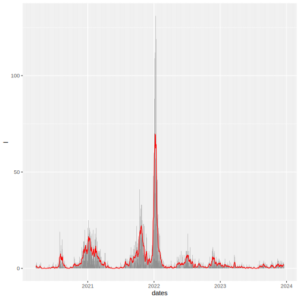
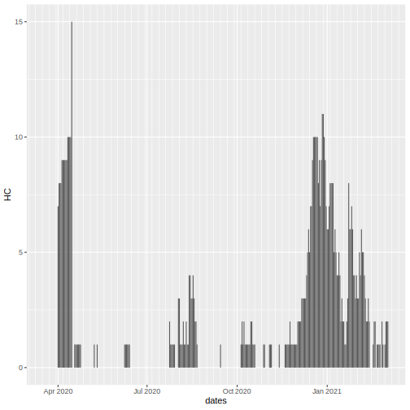
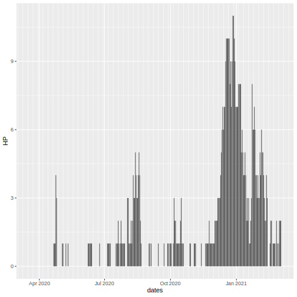
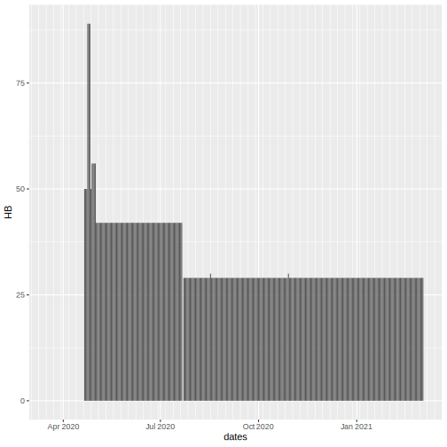
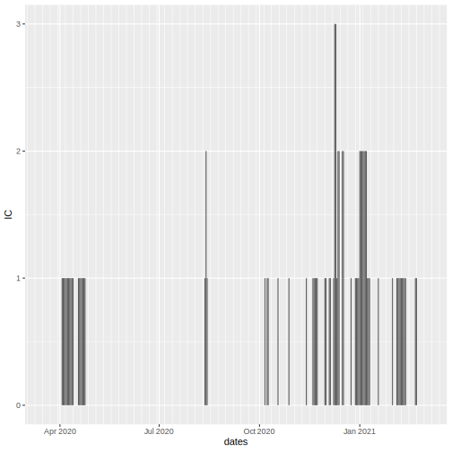
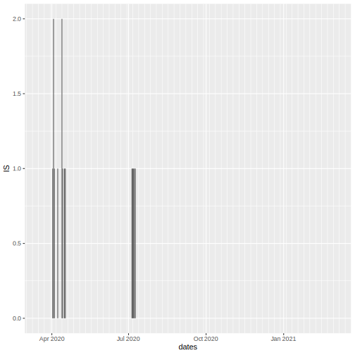
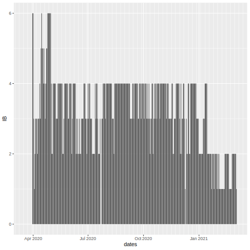

| County | Inyo |
| Estimated R | 5.2762536(1.5319113) |
| Daily Incidence | 10 |
| Cumulative Incidence | 187 |
| Cumulative Deaths | 15 |
| Conversion Errors | 0 |
Daily Incidence

Cumulative Incidence

Cumulative Deaths

Hospitalized Confirmed COVID-19 Patients

Hospitalized Suspected COVID-19 Patients
Hospitalized Covid-19 Patients

All Hospital Beds

ICU Confirmed COVID-19 Patients

ICU Suspected COVID-19 Patients

ICU Hospital Beds

Conversion Errors

Estimated R